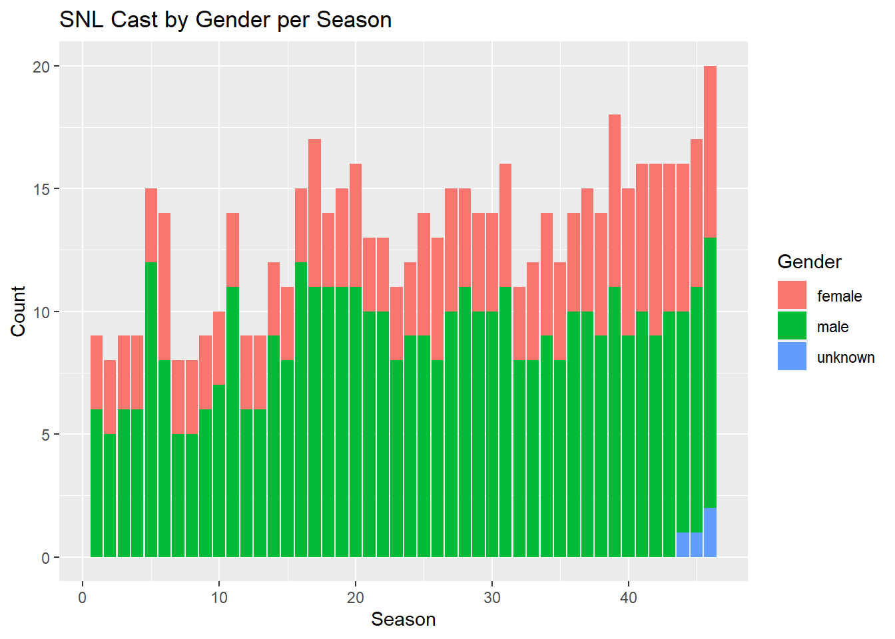
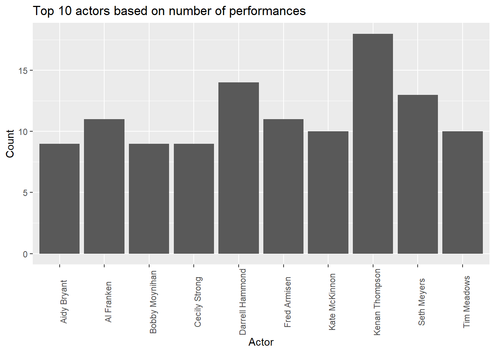

library(tidyverse)
library(ggplot2)
knitr::opts_chunk$set(echo = TRUE, warning=FALSE, message=FALSE)Challenge 8 Instructions
challenge_8
railroads
snl
faostat
debt
Joining Data
Challenge Overview
Today’s challenge is to:
- read in multiple data sets, and describe the data set using both words and any supporting information (e.g., tables, etc)
- tidy data (as needed, including sanity checks)
- mutate variables as needed (including sanity checks)
- join two or more data sets and analyze some aspect of the joined data
(be sure to only include the category tags for the data you use!)
Read in data
Read in one (or more) of the following datasets, using the correct R package and command.
- military marriages ⭐⭐
- faostat ⭐⭐
- railroads ⭐⭐⭐
- fed_rate ⭐⭐⭐
- debt ⭐⭐⭐
- us_hh ⭐⭐⭐⭐
- snl ⭐⭐⭐⭐⭐
I’m planning to use the SNL data:
snl_actors <- read_csv("_data/snl_actors.csv")
head(snl_actors)# A tibble: 6 × 4
aid url type gender
<chr> <chr> <chr> <chr>
1 Kate McKinnon /Cast/?KaMc cast female
2 Alex Moffat /Cast/?AlMo cast male
3 Ego Nwodim /Cast/?EgNw cast unknown
4 Chris Redd /Cast/?ChRe cast male
5 Kenan Thompson /Cast/?KeTh cast male
6 Carey Mulligan /Guests/?3677 guest andy dim(snl_actors)[1] 2306 4snl_casts <- read_csv("_data/snl_casts.csv")
head(snl_casts)# A tibble: 6 × 8
aid sid featured first_epid last_epid update_…¹ n_epi…² seaso…³
<chr> <dbl> <lgl> <dbl> <dbl> <lgl> <dbl> <dbl>
1 A. Whitney Brown 11 TRUE 19860222 NA FALSE 8 0.444
2 A. Whitney Brown 12 TRUE NA NA FALSE 20 1
3 A. Whitney Brown 13 TRUE NA NA FALSE 13 1
4 A. Whitney Brown 14 TRUE NA NA FALSE 20 1
5 A. Whitney Brown 15 TRUE NA NA FALSE 20 1
6 A. Whitney Brown 16 TRUE NA NA FALSE 20 1
# … with abbreviated variable names ¹update_anchor, ²n_episodes,
# ³season_fractiondim(snl_casts)[1] 614 8snl_seasons <- read_csv("_data/snl_seasons.csv")
head(snl_seasons)# A tibble: 6 × 5
sid year first_epid last_epid n_episodes
<dbl> <dbl> <dbl> <dbl> <dbl>
1 1 1975 19751011 19760731 24
2 2 1976 19760918 19770521 22
3 3 1977 19770924 19780520 20
4 4 1978 19781007 19790526 20
5 5 1979 19791013 19800524 20
6 6 1980 19801115 19810411 13dim(snl_seasons)[1] 46 5Briefly describe the data
This dataset contains information on the casts of Saturday Night Live from 1975 to 2020. Each row of this newly created dataframe represents a distinct actor-season pairing, complete with information on the actor and the SNL seasons in which they have appeared. Each row includes information about the actor’s gender, whether they appeared in a specific season, the date of their first episode, the date of their last episode, the number of episodes they’ve appeared in, the percentage of each season they’ve appeared in, a URL for that actor, whether they were a member of the cast or a guest on the show, and whether they were an anchor on weekend update.
Tidy Data (as needed)
We can check for N/A and get rid of them in all the datasets.
snl_actors <- snl_actors %>%
drop_na()
snl_actors# A tibble: 2,249 × 4
aid url type gender
<chr> <chr> <chr> <chr>
1 Kate McKinnon /Cast/?KaMc cast female
2 Alex Moffat /Cast/?AlMo cast male
3 Ego Nwodim /Cast/?EgNw cast unknown
4 Chris Redd /Cast/?ChRe cast male
5 Kenan Thompson /Cast/?KeTh cast male
6 Carey Mulligan /Guests/?3677 guest andy
7 Marcus Mumford /Guests/?3679 guest male
8 Aidy Bryant /Cast/?AiBr cast female
9 Steve Higgins /Crew/?StHi crew male
10 Mikey Day /Cast/?MiDa cast male
# … with 2,239 more rowssnl_casts <- snl_casts %>%
select(aid, sid, featured, update_anchor, n_episodes, season_fraction)
snl_casts <- snl_casts %>%
drop_na()
snl_casts# A tibble: 614 × 6
aid sid featured update_anchor n_episodes season_fraction
<chr> <dbl> <lgl> <lgl> <dbl> <dbl>
1 A. Whitney Brown 11 TRUE FALSE 8 0.444
2 A. Whitney Brown 12 TRUE FALSE 20 1
3 A. Whitney Brown 13 TRUE FALSE 13 1
4 A. Whitney Brown 14 TRUE FALSE 20 1
5 A. Whitney Brown 15 TRUE FALSE 20 1
6 A. Whitney Brown 16 TRUE FALSE 20 1
7 Alan Zweibel 5 TRUE FALSE 5 0.25
8 Sasheer Zamata 39 TRUE FALSE 11 0.524
9 Sasheer Zamata 40 TRUE FALSE 21 1
10 Sasheer Zamata 41 FALSE FALSE 21 1
# … with 604 more rowssnl_seasons <- snl_seasons %>%
drop_na()
snl_seasons# A tibble: 46 × 5
sid year first_epid last_epid n_episodes
<dbl> <dbl> <dbl> <dbl> <dbl>
1 1 1975 19751011 19760731 24
2 2 1976 19760918 19770521 22
3 3 1977 19770924 19780520 20
4 4 1978 19781007 19790526 20
5 5 1979 19791013 19800524 20
6 6 1980 19801115 19810411 13
7 7 1981 19811003 19820522 20
8 8 1982 19820925 19830514 20
9 9 1983 19831008 19840512 19
10 10 1984 19841006 19850413 17
# … with 36 more rowsJoin Data
We can join all 3 datasets and then analyze
snl_actors_casts <- snl_actors %>%
inner_join(snl_casts, by="aid")
snl_actors_casts_seasons <- snl_actors_casts %>%
inner_join(snl_seasons, by="sid")
snl_actors_casts_seasons# A tibble: 607 × 13
aid url type gender sid featu…¹ updat…² n_epi…³ seaso…⁴ year first…⁵
<chr> <chr> <chr> <chr> <dbl> <lgl> <lgl> <dbl> <dbl> <dbl> <dbl>
1 Kate … /Cas… cast female 37 TRUE FALSE 5 0.227 2011 2.01e7
2 Kate … /Cas… cast female 38 TRUE FALSE 21 1 2012 2.01e7
3 Kate … /Cas… cast female 39 FALSE FALSE 21 1 2013 2.01e7
4 Kate … /Cas… cast female 40 FALSE FALSE 21 1 2014 2.01e7
5 Kate … /Cas… cast female 41 FALSE FALSE 21 1 2015 2.02e7
6 Kate … /Cas… cast female 42 FALSE FALSE 21 1 2016 2.02e7
7 Kate … /Cas… cast female 43 FALSE FALSE 21 1 2017 2.02e7
8 Kate … /Cas… cast female 44 FALSE FALSE 21 1 2018 2.02e7
9 Kate … /Cas… cast female 45 FALSE FALSE 18 1 2019 2.02e7
10 Kate … /Cas… cast female 46 FALSE FALSE 17 1 2020 2.02e7
# … with 597 more rows, 2 more variables: last_epid <dbl>, n_episodes.y <dbl>,
# and abbreviated variable names ¹featured, ²update_anchor, ³n_episodes.x,
# ⁴season_fraction, ⁵first_epidWith the below plot we can see how analyze SNL cast by their gender per season
graph <- ggplot(snl_actors_casts_seasons, aes(sid, fill = gender)) +
geom_bar() +
labs(
title = "SNL Cast by Gender per Season",
x = "Season",
y = "Count",
fill = "Gender"
)
graph
With the below plot we can see the top 10 actors based on number of performances
# Calculate the number of times each actor acted in each year
actor_counts <- snl_actors_casts_seasons %>%
group_by(aid) %>%
summarise(count = n())
top_10_actors <- actor_counts %>%
arrange(desc(count)) %>%
head(10)
# Create the graph
graph <- ggplot(top_10_actors, aes(x = aid, y = count)) +
geom_bar(stat = "identity") +
labs(
title = "Top 10 actors based on number of performances",
x = "Actor",
y = "Count",
) + theme(axis.text.x = element_text(angle = 90))
graph